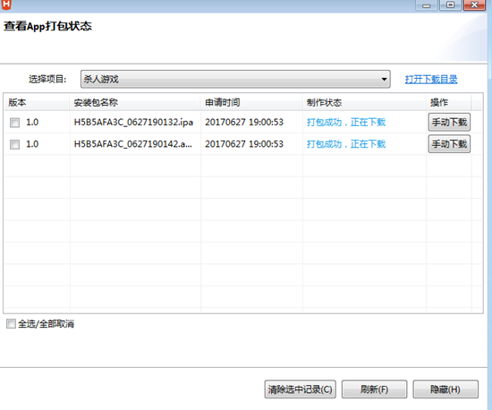

如何使用HBUILDER打包APP？
小课堂【深圳-WEB-C组】
分享人：李榕涛
目录
1.背景介绍
2.知识剖析
3.常见问题
4.解决方案
5.编码实战
6.扩展思考
7.参考文献
8.更多讨论
1.背景介绍
HBuilder是DCloud（数字天堂）推出的一款支持HTML5的Web开发IDE。HBuilder的编写用到了Java、C、Web和Ruby。HBuilder本身主体是由Java编写，它基于Eclipse，所以顺其自然地兼容了Eclipse的插件。 快，是HBuilder的最大优势，通过完整的语法提示和代码输入法、代码块等，大幅提升HTML、js、css的开发效率。 当知道如何创建HTML5 APP项目，以及APP页面如何调试后。接下来，需要考虑的就是HTML5 APP项目打包的事情。
2.知识剖析
Manifest.json文档
Manifest.json文件是5+移动App的配置文件，用于指定应用的显示名称、图标、应用入口文件地址及需要使用的设备权限等信息， 用户可通过HBuilder的可视化界面视图或者源码视图来配置5+移动App的信息。 Manifest.json文件根据w3c的webapp规范制定， plus节点下内容为HTML5Plus扩展规范，其下包括iOS和Android子节点，内容来源分别为iOS和Android原生打包所要求的参数， 用于对5+移动App打包为ipa或apk安装包进行配置。
3.常见问题
如何打包成app
4.解决方案
网址：http://www.dcloud.io/


打包成功后会显示一个安卓的app，一个苹果的app； 
5.编码实战
6.扩展思考
ios打包ipa：iOS开发环境，Mac OS、XCode
Android打包apk：Android开发环境，使用eclipse和ADT
7.参考文献
DCloud文档
5+APP开发入门指南
8.更多讨论
鸣谢
感谢大家观看
By 李榕涛